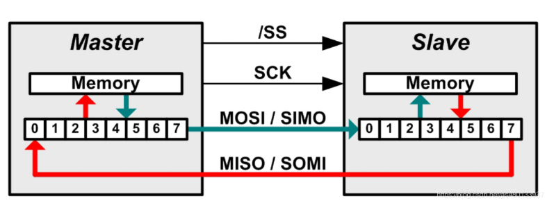
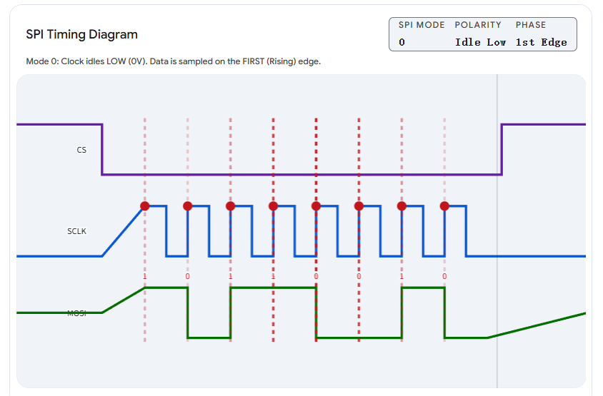
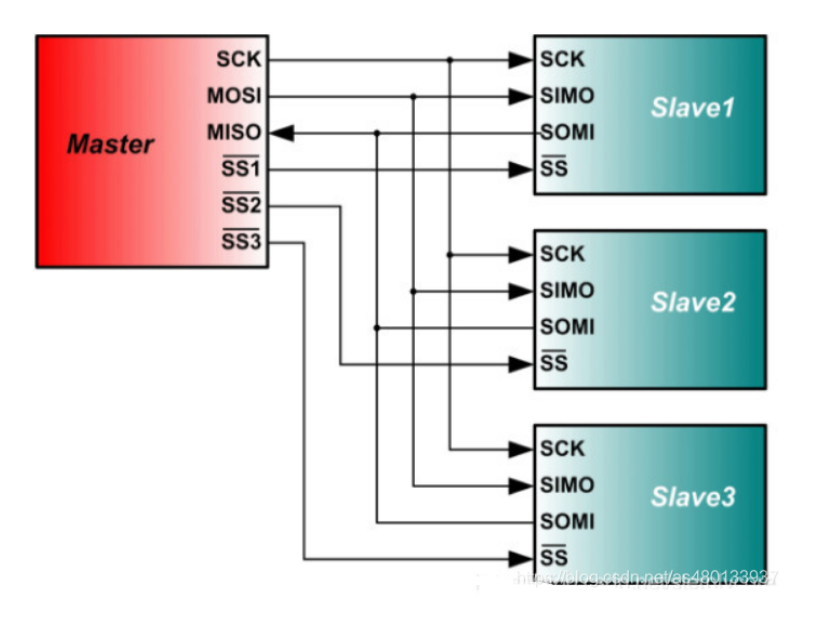
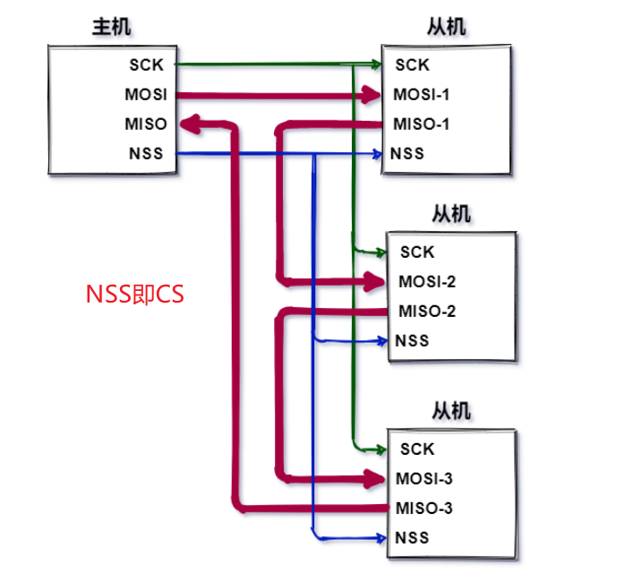
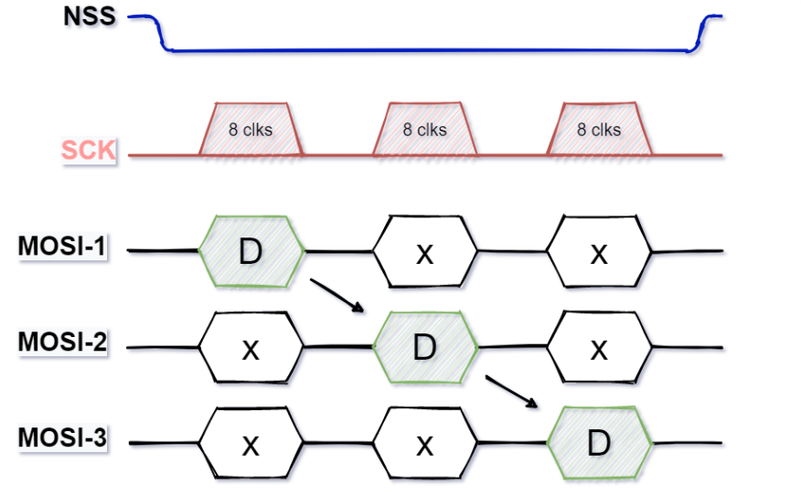

版权信息
warning
本文章为博主原创文章。遵循 CC 4.0 BY-SA 版权协议，转载请附上原文出处链接和本声明。
1. 什么是SPI？
SPI（Serial Peripheral Interface，串行外设接口）是由摩托罗拉（Motorola）公司开发的一种同步、全双工、单主多从式的通信协议。
不用被这些名词吓到，我们拆解来看：
- 同步： 意味着通信双方有一个共同的时钟（节拍器）来指挥数据的收发，步调一致。
- 全双工： 数据可以同时双向传输。就像你在打电话，你可以一边说话一边听对方说话。
- 单主多从式： 网络中有且只有一个“老大”（Master），其他都是“小弟”（Slave）。老大负责提供时钟节拍，并决定什么时候和哪个小弟说话（CS）。
2. 工作原理
它的底层硬件逻辑其实极其简单粗暴——核心就是移位寄存器（Shift Register）。
在STM32（主机）和你的屏幕或传感器（从机）内部，各有一个8位（或16位）的移位寄存器。这两个寄存器通过 MOSI 和 MISO 两根线首尾相连，形成了一个环形结构。
工作过程就是转圈交换数据：
主机将 CS 线拉低。
-
准备阶段： 主机把要发送的数据放到自己的移位寄存器里；从机也把要返回的数据放到自己的移位寄存器里。
-
时钟启动： 主机的 SCLK 引脚开始发出时钟脉冲。
-
环形移位： 每来一个时钟脉冲的边沿（取决于SPI的工作模式）：
- 主机寄存器里的最高位（MSB）通过 MOSI 线被挤出去，跑进从机寄存器的最低位。
- 同时，从机寄存器里的最高位（MSB）通过 MISO 线被挤出去，跑进主机寄存器的最低位。
-
完成交换： 经过连续的8个时钟脉冲，主从机内部的8位数据刚好完整地转了一圈。主机的发出去的数据到了从机，从机的数据也到了主机。
-
锁存：当CS线再次被拉高，数据被锁存。就可以开始解析数据了。
因此，SPI的发送和接收是绑定在一起同时发生的。
- 主机哪怕只是纯发送，它的MISO引脚也会在底层同步接收从机发来的数据（虽然你可以忽略这些垃圾数据）。
- 反之，如果主机只想读数据，也必须主动发送一个“伪数据”（通常是
0xFF或0x00），产生8个时钟节拍，才能把从机里的数据给“挤”回来。


3. 标准SPI信号线
SPI接口一般使用四条信号线通信：SDI（数据输入），SDO（数据输出），SCK（时钟），CS（片选）
亦即：
-
SCLK (Serial Clock) - 串行时钟线： 由主机产生，就像乐队指挥的指挥棒。时钟的频率决定了通信的速度。
-
MOSI (Master Output Slave Input) - 主出从入： 主机发送数据，从机接收数据的通道。
-
MISO (Master Input Slave Output) - 主入从出： 主机接收数据，从机发送数据的通道。
-
CS/NSS (Chip Select / Slave Select) - 片选线： 由主机控制，低电平有效。当主机想要和某个特定的从机通信时，就会把连接那个从机的CS线拉低（变成0V）。这就好比上课时老师点名：“那个CS线被拉低的同学，站起来回答问题！”
因为每个从机都需要一根独立的CS线，所以如果从机太多，会占用主机较多的GPIO引脚。
4. SPI工作模式
SPI允许配置时钟的极性和相位，组合出四种工作模式。
-
CPOL (Clock Polarity - 时钟极性)： 决定了SPI空闲时（没有数据传输时），SCLK线是高电平还是低电平。
-
CPOL = 0：空闲时SCLK为低电平。 -
CPOL = 1：空闲时SCLK为高电平。
-
-
CPHA (Clock Phase - 时钟相位)： 决定了数据是在时钟的第几个跳变沿（上升沿或下降沿）被采样（读取）。
-
CPHA = 0：在第1个跳变沿采样数据。 -
CPHA = 1：在第2个跳变沿采样数据。
-

怎么选？ 具体使用哪种模式，完全取决于你要连接的从机芯片手册怎么写。绝大多数市面上的传感器和屏幕驱动芯片，默认使用的是 Mode 0 (CPOL=0, CPHA=0) 或 Mode 3 (CPOL=1, CPHA=1)。
5. SPI 多从设备的连接
主机连接从机的方法一般有两种——直连式和菊花链式
直连：
很直观。

菊花链：
可以看出菊花链可以一定程度上节省GPIO资源。
菊花链的最大缺点是因为是信号串行传输，所以一旦数据链路中的某设备发生故障的时候，它下面优先级较低的设备就不可能得到服务了；
另一方面，距离主机越远的从机，获得服务的优先级越低，所以需要安排好从机的优先级，并且设置总线检测器，如果某个从机超时，则对该从机进行短路，防止单个从机损坏造成整个链路崩溃的情况；

具体的数据流向：

D为有效数据，X为无效数据（无操作指令NOP），可以看出，离主机越远，主机要给该从机发送消息耗时越长。
假设你有 3 个设备组成菊花链（从机 1、从机 2、从机 3，从机 3 在最末端）。你想让从机 3 执行指令
0xAA，同时让从机 1 和 2 保持原样。主机不能只发一个0xAA，它必须一次性发送 3 个字节（24 bits） 的数据。数据包的构造顺序是：
第 1 个字节：给从机 3 的目标指令0xAA
第 2 个字节：给从机 2 的 NOP（无操作）指令（通常是0x00或0xFF，具体看芯片手册）
第 3 个字节：给从机 1 的 NOP（无操作）指令